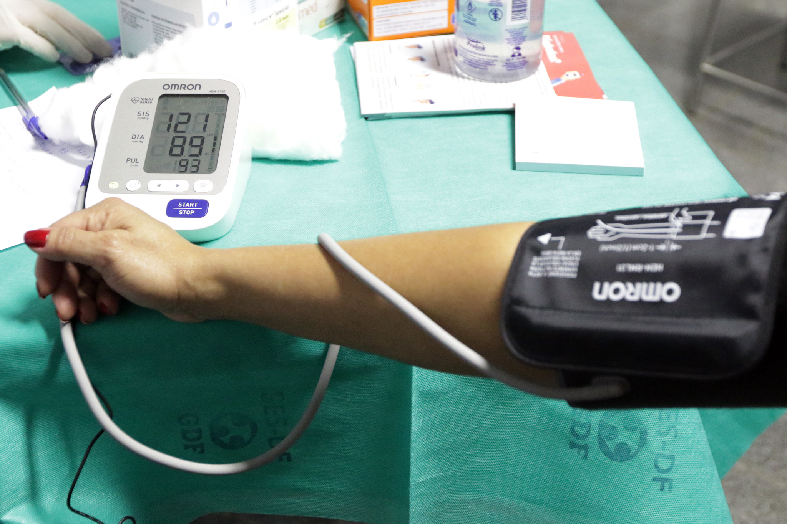

TÓPICO 2
O PROCESSO DE TRABALHO E SAÚDE-DOENÇA DOS TRABALHADORES DA APS
TÓPICO 2
O PROCESSO DE TRABALHO E SAÚDE-DOENÇA DOS TRABALHADORES DA APS
Você sabia que a hipertensão essencial (primária) pode ser considerada como doença relacionada ao trabalho?
Acompanhe os agentes ou fatores de risco relacionados a essa doença elencados na Lista de Doenças Relacionadas ao Trabalho:
Exposição a chumbo e seus compostos tóxicos em atividades de trabalho.
Exposição a níveis de pressão sonora elevados no trabalho.
Fatores psicossociais relacionados a: gestão organizacional; contexto da organização do trabalho; característica das relações sociais no trabalho; conteúdo das tarefas do trabalho; condição do ambiente de trabalho; interação pessoa-tarefa; jornada de trabalho; violência e assédio moral e sexual no trabalho; discriminação no trabalho; e/ou risco de morte e trauma no trabalho.
Desemprego.
